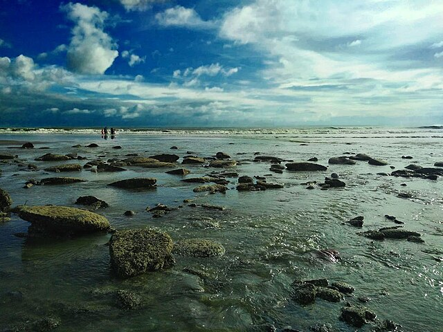
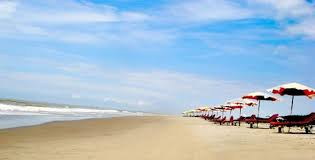
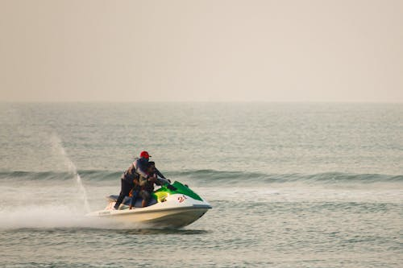

ইতিহাস ও গুরুত্ব
ইতিহাস
Cox’s Bazar বাংলাদেশের দক্ষিণ-পূর্বাঞ্চলে অবস্থিত এবং এটি বিশ্বের দীর্ঘতম প্রাকৃতিক সমুদ্র সৈকত। প্রাথমিকভাবে স্থানীয় সম্প্রদায় মাছধরা ও বাণিজ্যের জন্য পরিচিত ছিল। ব্রিটিশ ঔপনিবেশিক সময়ে সৈকতটি পর্যটকদের জন্য পরিচিত হতে শুরু করে। ১৯৫০-এর দশকে সরকার এটিকে পর্যটন কেন্দ্র হিসেবে উন্নয়নের পরিকল্পনা নেয়। Cox’s Bazar-এর সূর্যাস্ত, বিস্তীর্ণ বালি ও প্রাকৃতিক সৌন্দর্য পর্যটকদের আকর্ষণ করে। এখানে সমুদ্রসৈকতের পাশাপাশি হোটেল, রিসোর্ট এবং জলক্রীড়ার সুযোগ রয়েছে। বিশ্বব্যাপী পর্যটকরা এটি “Longest Beach in the World” হিসেবে চেনে।
গুরুত্ব
- বাংলাদেশের পর্যটন শিল্পে গুরুত্বপূর্ণ অবদান রাখে।
- আন্তর্জাতিক পর্যটকদের জন্য দেশের মুখপত্র হিসেবে কাজ করে।
- স্থানীয় অর্থনীতি ও কর্মসংস্থানে সহায়ক।
- সমুদ্র, পাহাড় ও বনানীর সংমিশ্রণ শিক্ষামূলক এবং প্রাকৃতিক শিক্ষা প্রদান করে।
- পরিবার, বন্ধু ও শিশুদের জন্য নিরাপদ বিনোদন ও বিশ্রামের স্থান।
- জলক্রীড়া, রিসোর্ট ও হোটেল ব্যবসার জন্য সম্ভাবনার জায়গা।
- পরিবেশ ও প্রাকৃতিক সৌন্দর্য সংরক্ষণের গুরুত্ব রয়েছে।
- আন্তর্জাতিক মিডিয়ায় বাংলাদেশের পরিচিতি বাড়ায়।
- স্থানীয় সম্প্রদায় ও সংস্কৃতি পর্যটকদের কাছে পরিচিত করায়।
- দেশের অভ্যন্তরীণ পর্যটন বৃদ্ধিতে সহায়ক।
Quick facts
- নাম: Cox’s Bazar
- অবস্থান: চট্টগ্রাম, বাংলাদেশ
- ধরন: সমুদ্র সৈকত
- বিশেষত্ব: দীর্ঘ সমুদ্র সৈকত, সূর্যাস্ত, পর্যটন
সংক্ষিপ্ত বিবরণ
Cox’s Bazar বাংলাদেশের চট্টগ্রাম জেলার একটি প্রাকৃতিক সৈকত। এটি বিশ্বের দীর্ঘতম প্রাকৃতিক সমুদ্র সৈকত হিসেবে পরিচিত। পর্যটকরা এখানে সূর্যাস্ত, সমুদ্র এবং বিভিন্ন জলক্রীড়া উপভোগ করতে পারেন।
Visitor info
সাধারণত সকাল ৬টা থেকে সন্ধ্যা ৭টা পর্যন্ত খোলা। প্রবেশ ফি প্রযোজ্য না। পরিবার ও বন্ধুদের জন্য উপযুক্ত।
📸 Gallery


Cox’s Bazar-এর জনপ্রিয় সৈকতসমূহ
Most Visited: Cox’s Bazar Main Beach
বিশ্বের দীর্ঘতম প্রাকৃতিক সমুদ্র সৈকত। পরিবার এবং বন্ধুদের সঙ্গে আনন্দ ও বিশ্রামের জন্য সবচেয়ে জনপ্রিয়। সূর্যাস্ত দেখার জন্য সেরা। এখানে হোটেল, রিসোর্ট এবং পর্যটন সুবিধা প্রচুর।
Inani Beach
প্রশান্ত, তুলনামূলক কম ভিড়ের সৈকত। সাদা ও কালো পাথরের সুন্দর দৃশ্য। ফটোগ্রাফির জন্য উপযুক্ত। nature lovers ও adventure প্রেমীদের জন্য আদর্শ।
Himchari Beach

পাহাড়ী প্রাকৃতিক দৃশ্য এবং জলপ্রপাতের জন্য বিখ্যাত। ছোট hike ও nature trip এর জন্য উপযুক্ত। শান্তিপূর্ণ পরিবেশে বিশ্রামের জন্য ভালো।
Saint Martin's Island

বাংলাদেশের একমাত্র প্রবাল দ্বীপ। স্বচ্ছ জল এবং snorkeling এর জন্য আদর্শ। ফ্রেশ সমুদ্র খাবার এবং প্রাকৃতিক সৌন্দর্য উপভোগ করা যায়।
Teknaf Beach

বাংলাদেশের দক্ষিণতম সৈকত। pristine, শান্ত এবং কম ভিড়। nature escape ও secluded trip এর জন্য সেরা।
Laboni Beach
Cox’s Bazar শহরের কাছে। রিসোর্ট, দোকান এবং পানীয় সুবিধার জন্য উপযুক্ত। সূর্যাস্ত দেখার জন্য জনপ্রিয়। সহজে যাওয়া যায়।
Cox’s Bazar-এর জনপ্রিয় খাবারসমূহ
Mezban Beef
চট্টগ্রামের ঐতিহ্যবাহী মেজবান মাংস। সেরা স্বাদের জন্য স্থানীয় মশলা ব্যবহার করা হয়। Cox’s Bazar-এ এটি অবশ্যই খেতে হবে।
Fishes & Sea Food
সমুদ্র সৈকতের কাছাকাছি হওয়ায় তাজা মাছ, চিংড়ি, কাঁকড়া এবং অন্যান্য seafood প্রচুর পাওয়া যায়। Grilled বা curry style উভয়ই স্বাদে অসাধারণ।
Panta Bhat with Local Pickle
সকালে হালকা নাস্তায় স্থানীয় পান্তা ভাত এবং আচার। Authentic Bangladeshi flavor, বিশেষ করে স্থানীয় অতিথিদের কাছে জনপ্রিয়।
Chingri Malaikari
নারকেল দুধ এবং মশলা দিয়ে রান্না করা চিংড়ির পদ। Cox’s Bazar-এর seafood lovers এর must try।
Morog Polao
সুস্বাদু মুরগি পোলাও, যা স্থানীয় উৎসব ও রেস্তোরাঁর প্রধান attraction। Family dinner বা special occasion-এ try করা যায়।
Sweet Treats
Cox’s Bazar-এর local sweets যেমন মিষ্টি পায়েস, স্যান্ডুইচ আইসক্রিম এবং স্থানীয় কেক। Beach stroll-এর সময় must try।
Must Enjoy Rides & Adventure in Cox’s Bazar
Banana Boat

সমুদ্র সৈকতে জনপ্রিয় water ride। বন্ধু বা পরিবারের সঙ্গে উপভোগ করা যায়। Speed এবং thrill lovers এর জন্য must try।
Jet Ski
দ্রুততার সঙ্গে সমুদ্রে চলার sensation। Adventure seekers এবং beach sports enthusiasts-এর জন্য সেরা।
Para Sailing

সমুদ্রের উপর থেকে panoramic view উপভোগ করার জন্য সেরা। স্বচ্ছ জল, সূর্যাস্ত এবং horizon view দেখার জন্য ideal।
Surfing
সমুদ্রের তরঙ্গের সঙ্গে খেলা। Beginners এবং intermediate surfers-এর জন্য course & instructor available।
Horse Riding

সৈকতে ঘোড়া চালানোর আনন্দ। Children এবং family-friendly activity। Sunset time-এ বিশেষভাবে recommend।
Cox’s Bazar-এর জনপ্রিয় হোটেলসমূহ

Sea Pearl Beach Resort (5-তারকা)
লাক্সারি রিসোর্ট, সমুদ্রের সামনে, প্রাইভেট পুল ও স্পা সুবিধা। ফাইন ডাইনিং এর অভিজ্ঞতা।
- সমুদ্র সৈকতের দূরত্ব: ১ কিমি
- রুম রেট: ১৮,০০০ - ৩০,০০০ টাকা / রাত
- ভিউ: Stunning Oceanfront

Long Beach Hotel (5-তারকা)
লাক্সারি হোটেল, সমুদ্রের সামনে বারান্দা, সুইমিং পুল ও আধুনিক রুম।
- সমুদ্র সৈকতের দূরত্ব: ০.৫ কিমি
- রুম রেট: ১৫,০০০ - ২৮,০০০ টাকা / রাত
- ভিউ: Panoramic Sea View

Hotel Sea Crown (3-তারকা)
পরিবার-বান্ধব হোটেল, সৈকতের কাছাকাছি। পরিচ্ছন্ন ও আরামদায়ক রুম।
- সমুদ্র সৈকতের দূরত্ব: ১ কিমি
- রুম রেট: ৭,০০০ - ১২,০০০ টাকা / রাত
- ভিউ: আংশিক সমুদ্র দৃশ্য

Ocean Paradise Hotel (মাঝারি রেঞ্জ)
সুন্দর ও পরিচ্ছন্ন হোটেল, সৈকতের কাছাকাছি। ছোট পরিবার বা দম্পতিদের জন্য উপযুক্ত।
- সমুদ্র সৈকতের দূরত্ব: ২ কিমি
- রুম রেট: ৫,০০০ - ৮,০০০ টাকা / রাত
- ভিউ: সীমিত

Sea View Inn (বাজেট-ফ্রেন্ডলি)
সস্তায় আরামদায়ক রুম, সৈকতের কাছে। বেসিক সুবিধা থাকলেও পরিচ্ছন্ন ও উপযুক্ত।
- সমুদ্র সৈকতের দূরত্ব: ১.৫ কিমি
- রুম রেট: ২,৫০০ - ৪,০০০ টাকা / রাত
- ভিউ: আংশিক

Sea Breeze Resort (3-তারকা)
পরিবার-বান্ধব, আরামদায়ক রুম, নিকটস্থ রেস্তোরাঁ ও আকর্ষণীয় স্থান।
- সমুদ্র সৈকতের দূরত্ব: ০.৮ কিমি
- রুম রেট: ৬,০০০ - ১০,০০০ টাকা / রাত
- ভিউ: সীমিত